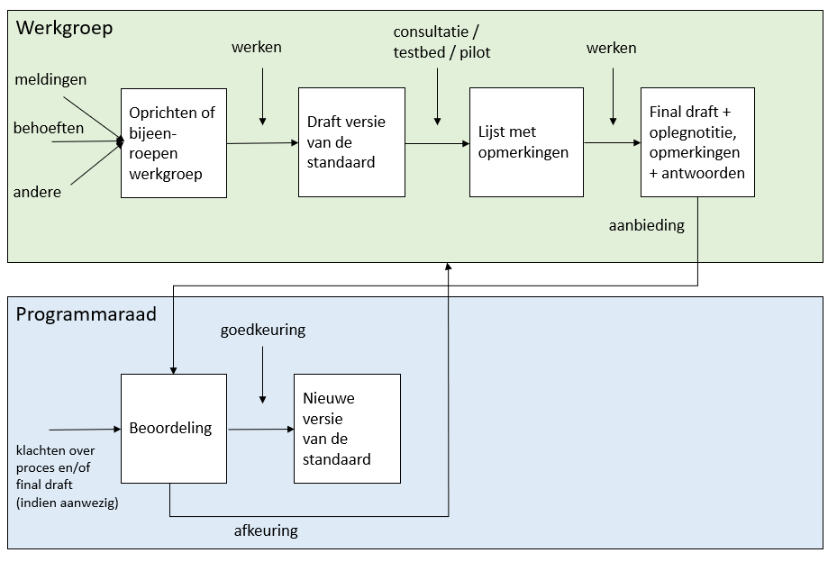

1. Inleiding
1.1 Introductie
In Nederland ontwikkelt en beheert Geonovum de basisset geo-standaarden. Mensen die in de praktijk gebruik maken van deze standaarden hebben vragen over de toepassing ervan, willen weten welke ontwikkelingen er spelen en hebben mogelijk suggesties voor aanpassingen van deze standaarden. In het document beheer geo-standaarden; worden de verschillende beheeraspecten beschreven zoals implementatieondersteuning, wijzigingsproces, governance, etcetera zodat iedere organisatie die de basisset geo-standaarden gebruikt haar weg weet te vinden in de geo-standaarden.
In dit document beschrijven we een onderdeel van het beheer: de manier waarop de wijzigingen van een basis geo-standaard plaatsvinden. Dit wijzigingsprotocol is dan ook alleen van toepassing op de basisset geo-standaarden, voor zover die bij Geonovum in beheer zijn. De basisset bestaat uit:
- Basismodel geo-informatie (NEN 3610);
- Geography Markup Language (GML);
- Nederlandse metadataprofielen voor geografie en services;
- Nederlandse profielen voor Web Feature Services (WFS) en Web Map Services (WMS).
Dit wijzigingsprotocol is ook van toepassing op elke nieuwe standaard die door Geonovum als basis geo-standaard wordt geclassificeerd, mits Geonovum deze in beheer heeft. Van de bovenstaande set standaarden vind de formele vaststelling en governance van het Basismodel Geo-informatie plaats binnen de NEN-structuren, maar alle daaraan voorafgaande stappen zijn aan Geonovum gedelegeerd. Voor GML geldt dat het OGC de formele beheerder is van de standaard, maar Geonovum beheert hier de toepassingen in de Nederlandse context.
Dit wijzigingsprotocol is niet van toepassing op de domeinstandaarden die Geonovum in beheer heeft. Iedere domeinstandaard in beheer bij Geonovum, zoals de BGT | IMGeo standaarden en de Ruimtelijke Ordening standaarden, heeft een eigen wijzigingsprotocol (dit geldt al voor BGT|IMGeo standaarden en de RO Standaarden) of zou dit moeten hebben. Het wijzigingsprotocol voor de basisset geo-standaarden geldt als het generieke wijzigingsprotocol. Andere wijzigingsprotocollen dienen hiervan te worden afgeleid en hiermee in lijn te zijn.
Wijzigingen in de basisset geo-standaarden worden niet zomaar doorgevoerd. Voor de ene gebruiker van een basis geo-standaard zal de wijziging gering zijn, voor de ander kan het grote gevolgen hebben. Daar houden wij rekening mee. De gebruikersgroepen van de standaarden en andere actoren in het wijzigingsproces zijn vastgelegd, evenals de belangrijkste taken en verantwoordelijkheden en de momenten waarop zij betrokken zijn in dit proces.
1.2 Waarom een wijzigingsprotocol
Een wijzigingsprotocol beschrijft de manier waarop wijzigingen in de basisset geo-standaarden plaatsvinden: het wijzigingsproces. In het protocol zijn basisbegrippen en uitgangspunten uiteengezet voor het wijzigingsproces, bijvoorbeeld wat onder nieuwe en volgende versies verstaan wordt, en wanneer deze verwacht mogen worden.
1.3 Checklist
Gebaseerd op dit wijzigingsprotocol, is een checklist voor het wijzigen van de basis geo-standaarden opgesteld. Deze checklist moet vaker kunnen wijzigen dan het wijzigingsprotocol. Daarom maakt de checklist geen onderdeel uit van het wijzigingsprotocol, maar is het een separate bijlage bij het wijzigingsprotocol.
1.4 Begrippen
| Begrip |
Toelichting |
| (Basis) geo-standaard |
Standaard uit de set geo-standaarden die is opgenomen op de Pas toe of leg uit-lijst van het Forum Standaardisatie. De basisset geo-standaarden bevat de domeinoverstijgende standaarden die nodig zijn om de Nederlandse geo-informatie infrastructuur goed te laten functioneren. |
| Roadmap |
Voor alle standaarden die bij Geonovum worden ontwikkeld en in beheer zijn/ komen in de komende jaren |
| Standaardenagenda |
Voor het lopende jaar de standaarden die in het kader van basisprogramma in ontwikkeling en beheer zijn. |
| Wijzigingsprotocol |
Hiermee wordt het geheel van vastgelegde regels en afspraken voor het wijzigen van de geo-standaard vastgelegd. |
| Wijzigingsproces |
Het wijzigingsproces is de daadwerkelijke wijziging van de geo-standaard op een bepaald moment. Het volledige wijzigingsproces doorloopt de fasen van het wijzigingsprotocol met een datum van inwerkingtreding van de nieuwe geo-standaard. |
| Wijzigingsverzoek |
Een wijzigingsverzoek is door een actor ingediend bij Geonovum, de beheerder van de geo-standaard; de geo-standaard moet op een bepaald punt met deze reden worden aangepast of aangevuld of niet. Een wijzigingsverzoek dat niet wordt ingewilligd, wordt beargumenteerd afgewezen. Een ingediende wens of gevonden fout voor de geo-standaard noemen we een wijzigingsverzoek. Iedere geo-standaard heeft een lijst met wijzigingsverzoeken inzichtelijk. |
| Wijzigingsvoorstel |
In het wijzigingsproces worden de wijzigingsverzoeken die daarin worden meegenomen gebundeld tot één wijzigingsvoorstel. |
2. Gebruik van het wijzigingsprotocol
Het protocol schrijft een vast stramien voor van fasen en op te leveren resultaten. Belangrijk zijn de randvoorwaarden, uitgangspunten. De gebruikers van de geo-standaard betrekken wij bij het wijzigen van de geo-standaard. We zetten op en rij welke betrokkenen er zijn. Voor de volledigheid wordt hier nogmaals benadrukt dat onderstaande tekst van toepassing is op de standaarden die Geonovum volledig in beheer heeft. Daar waar de formele governance plaatsvind bij NEN of OGC, geldt dat Geonovum zoveel mogelijk in de geest van dit protocol handelt.
2.1 Protocol versus proces
De titel van dit document geeft aan dat het hier om een protocol gaat. Toch wordt in dit document ook gesproken over processen. Een wijzigingsprotocol beschrijft de manier waarop wijzigingen in de basisset geo-standaarden plaatsvinden: het wijzigingsproces. In het protocol zijn basisbegrippen en uitgangspunten uiteengezet voor het wijzigingsproces, bijvoorbeeld wat onder nieuwe en volgende versies verstaan wordt en wanneer deze verwacht mogen worden. De daadwerkelijke planning van een nieuwe versie is op hoofdlijnen uitgewerkt in de standaardenagenda die Geonovum jaarlijks opstelt. Deze standaardenagenda zal nog worden vertaald naar een roadmap, waarin voor de komende jaren de verdere ontwikkeling en de uitfasering van de (verschillende versies van de) standaarden wordt getoond.
Met behulp van een wijzigingsprotocol voor de basisset geo-standaarden geeft Geonovum:
- inzicht in het behandel- en besluitproces dat ten grondslag ligt aan het versiebeheer;
- inzicht in de aangeboden wijzigingsvoorstellen;
- stabiliteit aan de standaard;
- continuïteit aan de standaard;
- een eenduidige aanpak.
De stabiliteit en continuïteit van de standaard maken wij inzichtelijk met de standaardenagenda en op termijn de roadmap.
2.2 Releasebeleid
2.2.1 Nieuwe geo-standaard of wijziging van een geo-standaard
Bij een geo-standaard in beheer horen ook afspraken over het versiebeheer. Versies van een standaard zijn er in verschillende gradaties die elk een relatie hebben met een voorgaande versie. De wijzigingen documenteren wij en leggen wij vast in een apart document bij de uitgebrachte versie van de standaard. De gebruiker kan zo nagaan op welke plaatsen de betreffende standaard gewijzigd is.
Geonovum hanteert drie typen versies voor een wijziging van een basis geo-standaard. Bijvoorbeeld: versie 2.1.0 (=X.Y.Z):
- X-wijzigingen Deze wijzigingen veranderen de structuur van de standaard. Hierdoor zijn X-wijzigingen niet backwards compatible. Frequentie: maximaal 1 keer per 3 jaar.
- Y-wijzigingen Dit zijn wijzigingen die niet de structuur veranderen. Dit kunnen bijvoorbeeld updates zijn of inhoudelijke aanpassingen aan objecten, attributen of waardelijsten of de reikwijdte van de standaard. Deze wijzigingen zijn backwards compatible. Frequentie: maximaal 1 keer per jaar.
- Z-wijzigingen Dit zijn in feite oplossingen van technische fouten of verbeteringen van technische aard. Deze wijzigingen zijn backwards compatible. Frequentie: zo spoedig mogelijk na constatering.
2.2.2 Oude versie van een standaard
Na het uitbrengen van een nieuwe versie van een bij Geonovum in beheer zijnde geo-standaard blijven oudere versies beschikbaar en zijn vindbaar via de Geonovum website en de registers (de conceptenbibliotheek , het technisch register en het documentenregister). Een nieuwe versie dwingt daarmee geen directe overstap af bij de gebruikers, tenzij anders (bijvoorbeeld wettelijk) bepaald. Na het uitbrengen van de nieuwe versie van een geo-standaard wordt de ontwikkeling van de oude versie stopgezet.
Voor het onderhoud en de ondersteuning van een oude versie van een geo-standaard gelden de volgende uitgangspunten:
- Aan een oude versie worden geen nieuwe features toegevoegd na het uitbrengen van een nieuwe versie. Verzoeken om aanpassing en wijziging voor nieuwe functionaliteit worden niet meer voor de oude geo-standaard in behandeling genomen. Z-wijzigingen zijn nog wel mogelijk, indien het gebruik in de praktijk dit nog rechtvaardigt.
- De programmaraad stelt met advies van de beheerder vast hoelang een oude versie wordt ondersteund en wanneer hij komt te vervallen (decline). Dit betekent dat vragen over het gebruik van de geo-standaard worden beantwoord (helpdesk). Daarnaast ondersteunen we de oude versie van de geo-standaard in de validator. De maximale ondersteuningstermijn is twee jaar, tenzij de programmaraad anders bepaalt. Daarna blijft de versie van de geo-standaard wel beschikbaar, maar biedt Geonovum geen ondersteuning meer, ook niet via de validator. Bij standaarden die niet meer worden ondersteund, wordt duidelijk vermeld of zichtbaar gemaakt dat deze zijn vervallen.
In het algemeen zal de Programmaraad alleen besluiten om een versie te laten vervallen en de ondersteuning te staken, als het de verwachting en/of de intentie is dat gebruikers alleen nog actief de nieuwe versie toepassen en daarbij ondersteuning behoeven.
2.3 Proces varianten
In paragraaf Oude versie van een standaard zijn de X, Y en Z wijzigingen uitgelegd. Voor wijzigingen kent Geonovum twee proces varianten. Eén voor X en Y wijzigingen en één voor Z wijzigingen.
Proces voor X en Y wijzigingen
Deze vergen volledige afstemming en het doorlopen van alle in paragraaf Oude versie van een standaard beschreven fasen: Inhoud, Toetsing, Besluitvorming en Implementatie. Voor de inhoudelijke fase wordt een werkgroep gestart met daarin vertegenwoordiging van belangrijke stakeholders. Het resultaat van de werkgroep wordt in een openbare consultatie getoetst. Besluitvorming over vaststelling van een standaard vindt plaats in de programmaraad van Geonovum. Indien nodig wordt met softwareleveranciers een convenant afgesloten of een bestaand convenant uitgebreid, waarin wordt afgesproken dat zij (onderdelen van) de standaard gaan ondersteunen.
Proces voor Z wijzigingen
Deze dienen zo snel als mogelijk uitgevoerd te worden. De inhoudelijke fase wordt door een medewerker van Geonovum gedaan. Toetsing vindt plaats d.m.v. een (beperkte) consultatie met stakeholders. Besluitvorming vindt plaats door het standaardenteam van Geonovum met een notificatie van de wijziging aan de programmaraad. Implementatie vindt plaats door het publiceren van de wijziging op de website van Geonovum.
2.4 Fasen en resultaten
Het volledige wijzigingsproces doorloopt de fasen Inhoud, Toetsing, Besluitvorming en Implementatie, zoals weergegeven in onderstaand figuur.
Figuur: Fasen wijzigingsproces

Inhoud
In de fase inhoud wordt voor iedere melding bepaald of deze wordt opgenomen in de nieuwe versie van de standaard of niet. Dit wordt vastgelegd in Jira, Github of een andere issue tracker en is zichtbaar op de website van Geonovum. Voor meldingen die worden meegenomen in de nieuwe versie van de standaard, worden oplossingen uitgewerkt, op basis waarvan vervolgens de specificatie wordt aangepast. Dit gebeurt door Geonovum in samenwerking met inhoudelijke experts. Afhankelijk van de omvang van de wijziging ten opzichte van de voorgaande versie is de groep van experts evenredig groter of kleiner.
Toetsing
De fase Toetsing vormt een brug tussen de inhoud, besluitvorming en de implementatie. In deze fase wordt eenieder (X, Y wijziging) of een beperkte groep belanghebbenden (Z wijziging) uitgenodigd om zijn visie te geven op de nieuwe versie van de standaard. De reacties uit de consultatie worden verwerkt in de specificatie.
Besluitvorming
Bij Besluitvorming wordt besloten om de gewijzigde specificatie vast te stellen en te publiceren. Afhankelijk van het type wijziging en de betreffende geo-standaard (X, Y of Z, zie paragraaf Proces varianten, besluit de Programmaraad dan wel het standaardenteam van Geonovum. Eenmaal vastgesteld en gepubliceerd, wordt de nieuwe versie van de standaard aangemeld bij het Forum Standaardisatie.
Implementatie
Het in gebruik nemen van de geo-standaard in de praktijk staat centraal in deze fase. Hiervoor leveren we verschillende technische bestanden op, zoals implementatiebestanden, voorbeeldbestanden en voorbeeldberichten. Deze bestanden ondersteunen softwareleveranciers bij de implementatie van de standaard in hun software. Beheerders van de voorziening/ het register e.d. nemen de geo-standaard over. Daarnaast stelt Geonovum validators beschikbaar, waarmee de technische juistheid van de implementatie van standaarden kan worden getoetst. Wij ondersteunen de implementatie bovendien door de werking van de geo-standaard toe te lichten op bijvoorbeeld een wiki. Resultaat van deze fase is dat de gebruikers data kunnen maken en uitwisselen conform de nieuwe standaard. In hoofdstuk Implementatie lichten we de implementatie verder toe.
2.5 Betrokkenen
De volgende groepen en instanties zijn betrokken bij het wijzigingsproces van de geo-standaard:
- Werkgroep;
- Softwareleveranciers;
- Programmaraad;
- Forum Standaardisatie;
- VNG Realisatie in verband met software catalogus.
Werkgroep en softwareleveranciers
Nieuwe versies van de geo-standaard bereidt Geonovum voor in samenwerking met de werkgroep(en) met daarin gebruikers en/of softwareleveranciers. We streven naar een unanieme instemming met de standaard. Dit versterkt het draagvlak en zorgt voor een betere implementatie van de geo-standaard in het werkveld.
Programmaraad
Bij het vaststellen van een nieuwe versie (X, Y) van een standaard stelt de programmaraad met advies van Geonovum vast hoelang een oude versie wordt ondersteund en wanneer een oude versie komt te vervallen. Het vaststellen van Z-wijzigingen (zie paragraaf Oude versie van een standaard) wordt door Geonovum zelf uitgevoerd zonder tussenkomst van de programmaraad. Een uitzondering hierop is het Basismodel Geo-informatie (NEN 3610). De programmaraad stelt de nieuwe versie van NEN 3610 niet vast, maar keurt hem goed (of af) en draagt deze vervolgens voor aan de NEN normcommissie 351 240 Geo-informatie. Deze commissie verzorgt de openbare consultatie en stelt de geo-standaard formeel vast.
Forum Standaardisatie
De basisset geo-standaarden staat op de Pas toe of leg uit-lijst van het Forum Standaardisatie. Organisatorisch bestaat er geen formele relatie tussen de programmaraad en het Forum Standaardisatie. De programmaraad stelt (versies van) geo-standaarden vast (voor zover dat niet in de governancestructuur van NEN of OGC gebeurt); het Forum Standaardisatie besluit uiteindelijk of die vastgestelde (versies van) geo-standaarden ook de status krijgen die behoort bij opname op de Pas toe of leg uit-lijst (de verplichting voor overheden om die standaarden uit te vragen bij aanbestedingen).
Geonovum heeft het predicaat uitstekend beheer voor de huidige standaarden (NEN3610, GML, serviceprofielen en metadataprofielen) in de set geo-standaarden. Dit betekent dat Geonovum het beheer en versiebeheer van die geo-standaarden zodanig open en structureel heeft vormgegeven, dat het Forum erop vertrouwt dat alle mogelijke belangen die spelen rondom de standaarden correct zijn meegenomen en afgewogen door Geonovum bij de totstandkoming van de nieuwe versie van de standaard. Op het moment dat Geonovum (of een andere partij) een nieuwe versie van een basis geo-standaard aanmeldt, wordt deze door het Forum in de regel na een veel lichtere procedure opgenomen.
Geonovum kondigt consultaties over de basis geo-standaarden aan bij Bureau Forum Standaardisatie, zodat zij hierover kan berichten op haar website of twitterkanaal.
VNG Realisatie
Verschillende standaarden die Geonovum beheert, komen voor in de GEMMA standaardenlijst en de GEMMA softwarecatalogus van VNG Realisatie. In de GEMMA standaardenlijst wordt bijgehouden welke versies van de standaarden 'in ontwikkeling', 'in gebruik', 'teruggetrokken' of 'niet ondersteund' zijn. Geonovum bepaalt wat de status van de standaardversies is.
3. Wijzigingsproces
De aanleiding voor een wijzigingsproces is gebaseerd op meldingen: de wensen en gevonden fouten in de geo-standaard, die aanleiding zijn om de standaard te vernieuwen. Samen vormen zij het wijzigingsvoorstel. Geonovum neemt als beheerder het initiatief om een wijzigingsproces te starten.
3.1 Wijzigingenbeheer
Belanghebbenden kunnen meldingen (wijzigingsverzoeken), variërend van wensen tot aanpassing van en fouten in een basis geo-standaard, indienen bij Geonovum (voor een voorbeeld zie de geo-standaard Metadata). Wij geven inzicht in de ontvangen en beoordeelde meldingen en bundelen de gehonoreerde verzoeken tot een wijzigingsvoorstel, in het geval we een wijzigingsproces starten voor een nieuwe versie van de standaard. Het wijzigingsprotocol beschrijft het wijzigingsproces en daarmee ook de procedure die het wijzigingsvoorstel doorloopt. Via onze website geven wij per geo-standaard een overzicht van de ingediende meldingen, met daarbij per melding de status. Zie bijlage voor een overzicht van de statussen van wijzigingsverzoeken. De meldingen stellen we via de Geonovum website voor eenieder beschikbaar.
Voor inzicht in de ontwikkeling van de basisset geo-standaarden is de standaardenagenda en op termijn de roadmap beschikbaar. In de standaardenagenda is aangegeven wat de algehele actuele ontwikkelingen zijn op het gebied van de geo-standaarden. De planning voor de uitvoering van het wijzigingsproces is op hoofdlijnen terug te vinden in de standaardenagenda.
Ontwikkelingen in de standaarden kunnen om verschillende redenen gewenst zijn, waaronder:
- geconstateerde fout in de standaard;
- wens tot wijziging, uitbreiding of vereenvoudiging uit de praktijk;
- aanpassing van de standaard door internationale ontwikkelingen.
Met behulp van het wijzigingsprotocol wordt de geplande wijziging van de geo-standaard uitgevoerd. In de aanloop naar een wijziging van de standaarden bundelt Geonovum de meldingen, verzoeken tot wijziging, in een wijzigingsvoorstel. Het wijzigingsvoorstel vormt de basis voor een werkgroep om een nieuwe versie van een geo-standaard op te stellen. Met behulp van onder andere een publieke consultatie leggen wij de nieuwe versie van een geo-standaard voor aan de praktijk en vragen hun feedback.
3.2 Inzicht in het wijzigingsproces
De meldingen en wijzigingsverzoeken alsook (inter)nationale ontwikkelingen geven aanleiding tot de verdere ontwikkeling voor een standaard. Zij worden gebundeld in een wijzigingsvoorstel. Het wijzigingsprotocol geeft richting aan het wijzigingsproces dat dit wijzigingsvoorstel doorloopt. In onderstaand figuur is het wijzigingsproces geschetst voor het vaststellen van een nieuwe (versie van een) geo-standaard. De beschrijving geldt voor de type wijziging versie X en Y. De programmaraad beoordeelt en beslist over deze wijzigingsvoorstellen. Z-wijzigingen worden door Geonovum zelf uitgevoerd zonder tussenkomst van de programmaraad.
Figuur: Proces vaststellen nieuwe standaard

Dit figuur toont twee groepen: de werkgroep en de programmaraad. De werkgroep voert het wijzigingsvoorstel in de standaard door. Dit resulteert in een definitief concept van de nieuwe versie van de standaard. De programmaraad beoordeelt dit definitief concept. Keurt zij het goed, dan is er een nieuwe standaard. Keurt zij het af, dan gaat het concept terug naar de werkgroep. Na aanpassing wordt het opnieuw aan de programmaraad voorgelegd, net zo lang totdat de programmaraad de nieuwe versie van de standaard accordeert of de standaard teruggetrokken wordt.
Bij het vaststellen van een nieuwe versie van een standaard stelt de programmaraad met advies van Geonovum vast hoelang een oude versie wordt ondersteund en wanneer een oude versie komt te vervallen. Een uitzondering hierop is het Basismodel Geo-informatie (NEN 3610). Ook nieuwe versies van deze standaard bereidt Geonovum voor in samenwerking met werkgroepen. De programmaraad stelt de nieuwe versie niet vast, maar keurt hem goed (of af) en draagt deze vervolgens voor aan de NEN normcommissie 351 240 Geo-informatie. Deze commissie verzorgt de openbare consultatie en stelt de standaard formeel vast.
De programmaraad beslist, op advies van Geonovum, of zij een vastgestelde standaard voordraagt voor opname op de pas-toe-of-leg-uit-lijst voor open standaarden. Bij een positief besluit verzorgt Geonovum de voordracht bij het Forum Standaardisatie. Organisatorisch bestaat er geen formele relatie tussen de stuurgroep en het Forum Standaardisatie, inhoudelijk dus wel.
4. Implementatie
Het in gebruik nemen van (een volgende versie van ) een geo-standaard staat centraal in deze fase. Hiervoor leveren we de verschillende implementatiebestanden op. Wij ondersteunen de implementatie met onder meer een helpdesk, en validator.
4.1 Technische bestanden
Om softwareleveranciers en gebruikers te ondersteunen bij de implementatie van een nieuwe versie van de geo-standaard, leveren wij verschillende bestanden en documentatie op:
- Implementatiebestanden;
- Voorbeeldbestanden;
- Voorbeeldberichten.
Schema’s en Schematron (validatieregels) zijn voorbeelden van implementatiebestanden die als onderdeel van standaarden door Geonovum worden opgeleverd. Het kan hier ook gaan om implementatiebestanden voor visualisatieregels en iconen.
Voorbeeldbestanden en voorbeeldberichten kunnen worden gebruikt voor het testen van applicaties.
4.2 Validatie en certificatie
Na het opleveren van de nieuwe standaard inclusief de verschillende onderdelen, richten wij ons op de ondersteuning van de standaard door softwareleveranciers, beheerders van voorzieningen/ registers. Bij deze groep gebruikers is de ondersteuning vooral technisch van aard. De validator is het hulpmiddel bij uitstek hierbij.
Soms zetten we conformiteitstoetsing in. In dat geval wordt een testprotocol voor een conformiteitstoets beschikbaar gesteld, waarmee (handmatig) kan worden gecontroleerd of een implementatie aan de norm voldoet.
Ook certificering van applicaties is mogelijk. Certificering van applicaties ondersteunt niet zozeer de (kwaliteit van de) implementatie van de standaarden, als wel de (snelheid van) adoptie ervan. Zodra het werkveld voldoende volwassen is en certificering niet meer nodig is om adoptie te versnellen, kan certificering komen te vervallen.
4.3 Opleiding
Per standaard, en nieuwe versie van de geo-standaard, bekijken we in hoeverre opleiding en advies van toegevoegde waarde zijn voor ondersteuning bij implementatie. De Geonovum wiki zetten we bijvoorbeeld in bij grote wijzigingen van de geo-standaard. Tijdens bijeenkomsten verzorgen wij workshops en presentaties. In de verschillende vakbladen publiceren wij artikelen.
5. Escalatie en Klachten
In voorgaande hoofdstukken gaat het protocol ervan uit dat er wijzigingen "in vrijheid" worden doorgevoerd. In het primaire proces wordt geen rekening gehouden met noodzakelijke wijzigingen die met spoed of onder druk van bijvoorbeeld externe nieuwe regelgeving moeten worden doorgevoerd. Dit is mogelijk middels een escalatieprocedure.
5.1 Wanneer is er sprake van een escalatieprocedure?
We doorlopen een escalatieprocedure als er een wijziging noodzakelijk is die niet in het reguliere wijzigingsproces doorgevoerd kan worden, omdat dit te lang duurt. Een uitputtende lijst met situaties en criteria wanneer dit van toepassing is, valt op voorhand niet te geven. Maar voor de beeldvorming: het gaat om situaties waarbij het niet doorvoeren van een bepaalde noodzakelijke wijziging leidt tot onaanvaardbare risico's voor de uitvoeringspraktijk of het onmogelijk uitvoeren (vanwege bijvoorbeeld tegenstrijdige wetten) van werkzaamheden.
De escalatieprocedure wordt niet gebruikt om reguliere wijzigingen sneller door te kunnen voeren.
5.2 Sturende principes escalatieprocedure
Er wordt geen vast proces gegeven om de escalatieprocedure te doorlopen, omdat verschillende situaties wellicht tot een verschillende wijze van handelen moeten leiden. In plaats daarvan wordt aan de hand van een aantal sturende principes uiteengezet welke verantwoordelijkheden er zijn binnen een escalatieprocedure. Dit wordt hier onder geschetst.
Signalering
Uit het werkveld kunnen signalen ontstaan dat er met spoed iets gewijzigd zou moeten worden. Het is vooraf niet aan te geven uit welke kanalen deze geluiden zullen ontstaan. Het is wel van belang om de rol van Geonovum te onderkennen als antennefunctie voor het werkveld. In ieder geval zullen deze signalen op enig moment de opdrachtgever of Geonovum bereiken, en op dat moment zal er overleg gevoerd worden over deze signalen.
Overleg
Bij de besluitvorming binnen de escalatieprocedure wordt er in principe overleg gevoerd tussen de programmaraad en Geonovum (het standaardenteam). Beide partijen raadplegen de betrokkenen daar waar nodig.
Besluitvorming
De beoordeling of de escalatieprocedure van toepassing is, wordt genomen door de voorzitter van de programmaraad. Ook het besluit welke wijzigingen er precies doorgevoerd moeten worden en op welke manier, wordt genomen door de voorzitter van de programmaraad.
Coördinatie
De coördinatie tijdens de escalatieprocedure wordt uitgevoerd door de voorzitter van de programmaraad.
Communicatie met het werkveld
De communicatie met het werkveld wordt uitgevoerd door Geonovum. Als beheerder van de geo-standaarden wordt verwacht dat Geonovum het meest directe contacten heeft met het werkveld.
5.3 Klachtenprocedure
Het betrekken van alle belanghebbenden in een wijzigingsproces is een belangrijk uitgangspunt van Geonovum. Eventuele klachten kunnen binnen de bestaande governancestructuren van Geonovum worden ingebracht. Voor inhoudelijke klachten met betrekking op de basisset geo-standaarden kunnen belanghebbenden zich richten tot de directie van Geonovum. De directie zal inhoudelijke klachten bespreken met de voorzitter van de programmaraad, waarna de voorzitter van de programmaraad beoordeelt hoe de klacht het beste binnen deze lijn kan worden geagendeerd.